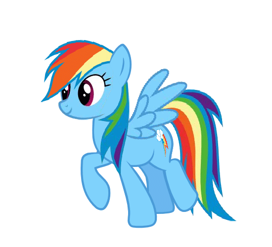

Pray for Rainbow Dash
Pray for Rainbow Dash
Pray for Rainbow Dash
Pray for Rainbow Dash



- "The one and only. Why? You've heard of me?"
- — To Twilight Sparkle, Friendship is Magic, part 1
- "Hey. I could clear this sky in ten seconds flat."
- — Friendship is Magic, part 1
- "And just what are the Elements of Harmony? And how did you know about Nightmare Moon, huh? Are you a spy?!'"
- — Friendship is Magic, part 2
- "Nopony knows! You know why? Because everypony who's ever come in... has never... come... OUT!'"
- — Friendship is Magic, part 2
- "You... thank you for the offer, I mean. But I'm afraid I have to say no."
- — Friendship is Magic, part 2
- "See? I'd never leave my friends hanging!"
- — To Twilight Sparkle, Friendship is Magic, part 2
- "Time to take out the adorable trash."
- — Swarm of the Century
- "I hate losing..."
- — Fall Weather Friends
- "You're not an athlete, you're a... well... you're an egghead."
- — Fall Weather Friends
- "It needs to be about twenty-percent cooler."
- — Suited For Success
- "LOOOUUUUUDDEEEEEEEERRRR!!!"
- — Sonic Rainboom
- "My life is ruined!"
- — Sonic Rainboom
- "Most people thought that the Sonic Rainboom was just an old mare's tail. But that day... The day I discovered racing... I proved that the legends were true. I made the impossible happen!"
- — The Cutie Mark Chronicles
- "I'm... hanging... with the... Wonderbolts!"
- — The Best Night Ever
- "Hey, now wait a minute! Just because I don't have a pet now doesn't mean I never want a pet!"
- — May the Best Pet Win!
- "Danger's my middle name. Rainbow 'Danger' Dash."
- — The Mysterious Mare Do Well
- "What about "Super-Ultra-Extreme-'Awesomazing?'""
- — The Mysterious Mare Do Well
- "Reading's for eggheads like you, Twilight. Heh, no offense, but I am not reading. It's undeniably, unquestionably, uncool."
- — Read It and Weep
- "I hate to admit it to myself and would really hate to admit it to my friends, but... I love this story! I, I... I love reading! I'm an egghead."
- — Read It and Weep
- "I-I don't even like cake!"
- — MMMystery on the Friendship Express
- "BEST. WEDDING. EVER!"
- — A Canterlot Wedding - Part 2
- "No offense, but it's not a real campfire story unless somepony's shaky."
- — To Scootaloo, Sleepless in Ponyville
- "No disrespect ma'am, but there's a big difference between pushing yourself as hard as you can, and just being reckless. And if being reckless is what gets rewarded around here, if that's what it means to be a Wonderbolt, then I don't want any part of it."
- — To Spitfire, Wonderbolts Academy
- "Omigoshomigoshomigoshomigosh!!"
- — Multiple episodes
- "You can't be tied for the most daring pony!"
- — Castle Mane-ia
- "But that was me! You're you! And it just doesn't matter if you can fly or not. Your routine was amazing 'cause it represented exactly what makes Ponyville special. You do still know what that is, right?"
- — To Scootaloo, Flight to the Finish
- "Think of the cider! Won't somepony please think of the cider?!"
- — Bats!
- "Wow, Applejack. I know your thing is honesty, but come on!'"
- — Rarity Takes Manehattan
- "That pony is a riddle wrapped in a mystery inside an igneous."
- — About Maud Pie, Maud Pie
- "[blows raspberry] Beneficial for eggheads!"
- — Testing Testing 1, 2, 3
- "And no matter what your sport is, we gotta give it our best because we all got a genuine shot at Ponyville gold."
- — Equestria Games
- "Ya' done good squirt!"
- — To Scootaloo, Equestria Games
- "Whoa, whoa, whoa! Is she for real?"
- — The Cutie Map - Part 1
- "Who said anything about anger?! I didn't say anything about anger! I'm not upset! And I am not angry! Do I look angry?!"
- — Tanks for the Memories
- "Duh! Because I'm a Wonderbolt!"
- — Newbie Dash
- "What would she do without us? Huh. Lemme think. [imitating Rarity] "Darlings, I'm absolutely doomed, doomed, doomed!" [laughs, normal] I sound just like her!"
- — The Saddle Row Review
- "Go, Scootaloo, go! Woo-woo-woo-woo! Uhh, I mean... [nervous laugh] This is the life."
- — The Cart Before the Ponies
- "Somepony is really gonna have to catch us up on what we missed."
- — To Where and Back Again - Part 2
- "Wishing you a happy birthday Hub; from the bottom of my heart!"
- — A Hub promo celebrating the channel's first anniversary of being on
- "It's time to pony up!"
- — Hub ad bumpers
- "Okay, seriously, why does EVERYPONY grab me by the tail?"
- — Enterplay collectible card game The Crystal Games #118 C card Telekinesis
- "Wow, we're calling HER in to help? Is the fate of Equestria really worth it?"